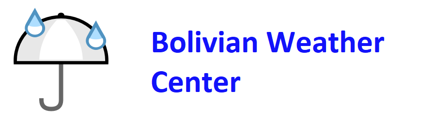

Site Name
Bolivian Weather Center
Site Purpose
The purpose of a Bolivian Weather Center is to provide as accurate as possible prediction in Bolivia of what the weather will be like in the near future. They are important to most aspects of day to day life, including aviation, boating, other modes of transportation, farming, tourism, sports, etc.
Domain Name
wwc.bolivianweather.com
Logo
